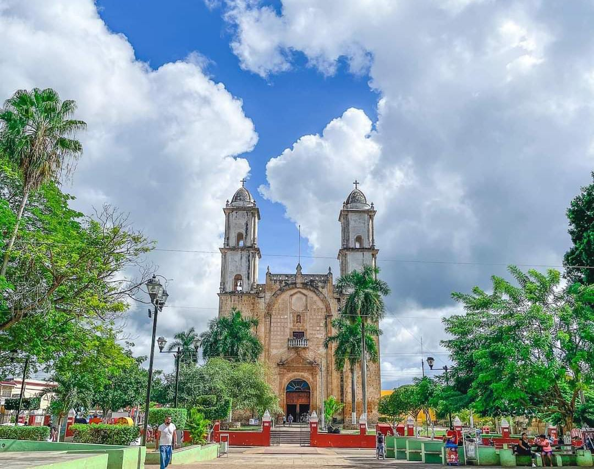

Ciudad de Peto
¡Su Historia!Cuenta con una maravillosos lugares, y un paisaje tranquilo, en si la ciudad es una tranquila, donde suele aver entretenimiento y diversion por lo que no se arrepentira de venir y poder visitar este lugar de maravillas.
como podra apreciar tiene un apartado donde esta cada informacion sobre la ciudad, yo te invito a que vengas y leas las las increibles relevancias de la ciudad, y con ello te animes a pasar por la ciudad con la familia para que tanto usted sus hijos.familiares y amigos pasen a disfrutar de una muy buena tranquilidad en esta ciudad y para que queden asombrados de la increible ciudad en donde los llevaste, asi que, que esperas en pasear en esta pagina y poder saber los increibles datos que tiene la ciudad..... ! QUE ESPERAS...¡
